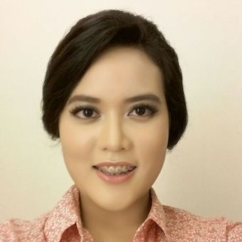

Born and raised in
Jakarta, Indonesia, I am currently in my third year of college,
majoring in Computer Science and minoring in
Music at the
University of California, Davis.
My first experience building things dates back to middle school.
I started composing music when I was thirteen, and I have never stopped since then!
I mainly compose piano pieces, and I write my own songs too!
I also love to sing - I sing my own songs and do covers as well.
Please check out my originals and covers on my
SoundCloud!
I started coding in my freshman year of college, and I enjoy it because it's fun, and
it's similar to making music!
The feeling of planning and perfecting separate parts, and then combining
them into a whole piece is thrilling.
I'll keep learning new frameworks and building things in the future,
and hopefully I can create a positive impact through my code as well!